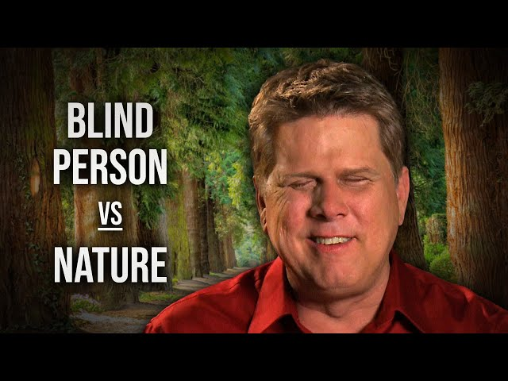
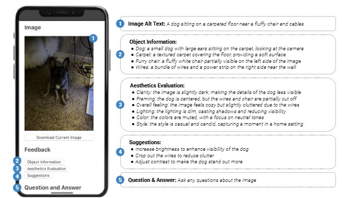
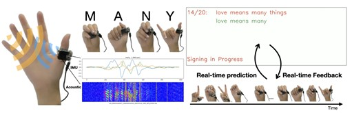
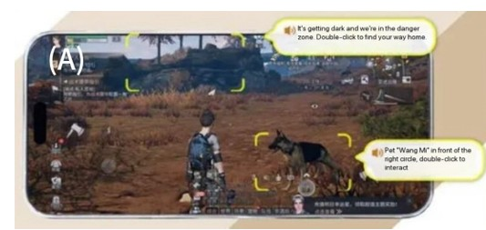
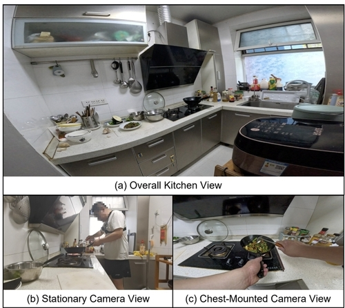

About the Lab
ATLAS Lab — the Accessible Technology and Life Augmented Systems Lab — builds interactive systems that make everyday physical activities accessible to people with disabilities and older adults.
We are a Human-Computer Interaction (HCI) research group in the School of Data and Information Sciences at the University of North Carolina at Chapel Hill, directed by Prof. Franklin Mingzhe Li. Our work sits at the intersection of HCI, accessibility, assistive technology, ubiquitous computing (UbiComp), and AI.
Much of accessibility research has focused on digital interfaces, yet many of the hardest barriers people with disabilities and older adults encounter are physical and situated: cooking a meal, applying makeup, navigating a public space, managing long-term health and care, or creating and sharing media. ATLAS Lab explores, designs, builds, and deploys systems that close this gap across home, community, and health care settings. We work closely with these collaborators throughout the research process, combining qualitative inquiry, participatory and co-design methods, wearable and ambient sensing, and multimodal AI to produce technologies that are usable in the real world rather than only in the lab.
Technically, that means building and evaluating systems rather than only studying them: grounding vision-language models in physical context so they can track task progress and recognize object state, designing wearable and ambient sensing pipelines that run on-body in real time, constructing benchmarks and datasets for physical-world tasks that existing models handle poorly, and developing mixed-initiative interfaces where a person can inspect and correct what a model concluded.
Lab News
Research Themes
Accessible Activities of Daily Living
Understanding and supporting everyday physical tasks — cooking, meal preparation, makeup and self-presentation — for people with vision impairments, through contextual inquiry and AI-driven procedural assistance.
Wearable and Ubiquitous Sensing
Low-effort input and interaction techniques built on rings, earpieces, and cameras — including fingerspelling recognition, micro-finger poses, teeth gestures, and eyelid gestures — designed with and for people with motor and sensory disabilities.
Multimodal AI for Accessibility
Grounding large multimodal models in real physical context so they can track task progress, recognize object state, and offer mixed-initiative assistance that is timely, trustworthy, and correctable by the user.
Accessible Content Creation
Tools that let disabled people create rather than only consume — conversational audio description authoring, expressive visual content creation by blind creators, and captioning practices of independent content creators.
Health Care and Well-being
Technologies that support long-term conditions and the care around them — wheelchair users' upper extremity health, driving assistance for people with Parkinson's disease, and accessible public robots — along with how patients, clinicians, and caregivers share the work of managing health.
Aging and Older Adults
Technologies that support independence as needs change with age — memory and object-finding aids, everyday routines at home, and the accessibility of tools older adults are asked to use, designed for a group whose abilities and preferences are rarely uniform.
Inclusive Design and Participation
Co-design and cross-cultural studies of how assistive technology is actually adopted, abandoned, or adapted — including perceptions of accessibility and AT use across different social and cultural contexts.
People

Selected Publications












Research Funding
- Academic Research Fund (AcRF) Tier 2
- Google Research Collabs
- Inclusive Design Challenge Award
- Stuart K. Card Fellowship
- Betensky-Kraut Endowed Fellowship
- Postgraduate Scholarship – Doctoral
Media Coverage
- AI ring tracks spelled words in American Sign Language
- Accessing Recipe Information Without Looking
- New Search Engine Tool Helps Users Make Sense of Unfamiliar Topics
- Eyelid gestures for people with motor impairments
- The Next Frontier for Gesture Control is Teeth
- Where have I left my wallet? This smart camera can remind you
Join Us
ATLAS Lab is recruiting research assistants starting Fall 2026 and PhD students starting Fall 2027!
- Prospective PhD students: apply to the School of Data and Information Sciences at UNC-Chapel Hill and mention Prof. Franklin Mingzhe Li in your application. Email a short note describing your research interests, along with your CV.
- UNC undergraduate and master's students: we regularly take on research assistants. Email a note about what draws you to accessibility research, your CV, and your availability per week.
- Visiting scholars and interns: get in touch with a description of your background, the dates you have in mind, and your funding situation.
We value curiosity, care in working with our community partners, and a willingness to learn methods that are new to you — whether that means qualitative study design, hardware prototyping, or building with multimodal models.
Contact
Accessible Technology and Life Augmented Systems Lab
School of Data and Information Sciences
University of North Carolina at Chapel Hill
ITS Manning, Room 4501
Chapel Hill, NC 27599
Email: fmli[at]unc[dot]edu